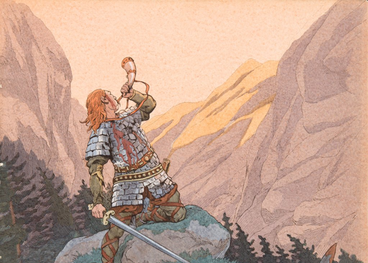
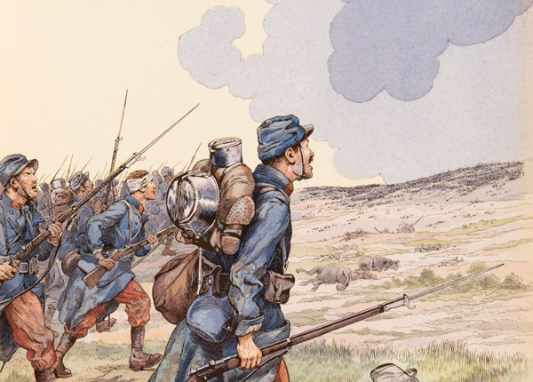
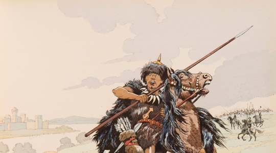
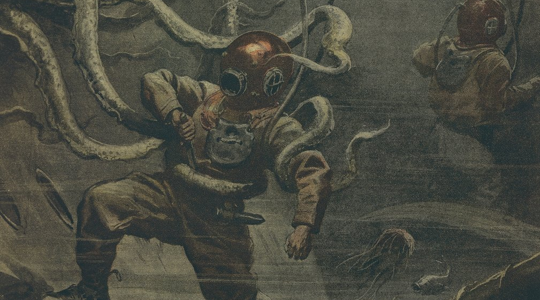

Minyatür Bağımsız · Tamamen Ücretsiz
Antik Çağ'dan Dünya Savaşlarına, fantastik diyarlardan uzayın derinliklerine — tek bir sistem, sınırsız savaş alanı.
Koleksiyonundaki her minyatürü sahaya sür. Kurallara hükmet, tarihi yeniden yaz. Ücretsiz indir, hemen oyna.
Temel Kural Setleri
Sahipkıran'ın çekirdeğinde iki dönem yatar. Her biri kendi silahlarını, taktiklerini ve savaş alanı atmosferini taşır — ama iskelet aynı mekanikler üzerinde yükselir.

Kılıçlar & Kalkanlar
Sümerlerden Osmanlı'ya, Romalılardan Vikinglere sayısız tarihi orduyla göğüs göğse çarpışmaları masana taşı. Hücum et, kuşat, bozguna uğrat.
Orta Çağ · Antik Çağ · Karanlık Çağlar
Ücretsiz İndir
Toplar & Tüfekler
Siperler kazılır, makineli tüfekler ateş açar, topçu bataryaları geceyi aydınlatır. Modern savaşın acımasız yüzüyle tanış. Her karış toprak için savaş.
1. Dünya Savaşı · 2. Dünya Savaşı · Kurtuluş Savaşı
Ücretsiz İndirİsteğe Bağlı Eklentiler
Temel kuralların üzerine istif edilen iki bağımsız eklentiyle savaşın sınırlarını aş. Büyü veya teknoloji — ya da ikisini birden — sahana kat.

Cadılar afsunküf mantarının gücüyle büyü örer, karabüyücüler iskelet orduları diriltir, umacılar iblisleri çağırır, devler savaş alanını kasıp kavurur. Afsunküf, Sahipkıran: Kılıç & Kalkan'a fantastik bir katman ekler: beş kavimlik kurmaca Arkea dünyası, beş cadı türü ve büyü sistemi, afsunlu silahlar ve yadigârlar, dev yaratıklar ve altı senaryo. Kalkan duvarı kur, falanks diz, yaylım ateşi yağdır — ya da bire bir dövüşte düşman lidere meydan oku.
Eklentiyi İndir
Psişikler zihinleri büker, boyutlar arası varlıklar gerçekliği çarpıtır, dünya dışı ordular insanlığın sınırlarını zorlar. Psikonik, Sahipkıran: Top & Tüfek'e bilim kurgu katmanı ekler: Annunkara'nın mirasıyla şekillenen bir galaksi, insanlık kuvvetleri (GÖK birlikleri, Güneş Jandarması, özel şirketler), üç zenoid tehdidi (eloi, morlok, entomon), psişik güçler sistemi ve psikoteknoloji. Senaryo oluşturucu, gezegen ve sistem üreteçleriyle kendi seferlerini kur — alevkusan ateşle, binalarda mevzilen, Araf'ın kıyısında savaş.
Eklentiyi İndirHer iki eklenti de temel kural setlerinin üzerine bağımsız olarak eklenir. Birini, ikisini veya hiçbirini kullanabilirsin — sistem modüler çalışır.
Sahipkıran tamamen ücretsiz, açık kaynak ve topluluk destekli. Kuralları indir, masanı hazırla, savaşa başla.
Sahipkıran evreninin masa başı rol yapma oyunu. Savaş alanının ötesine geç — karakterini yarat, dehlizlere dal, kaderini yaz.
Sahipkıran'ın mekanik iskeletinden doğan, bağımsız ve tam teşekküllü bir RYO deneyimi. Geliştirme sürecini takip et, deneme oyunlarına katıl.